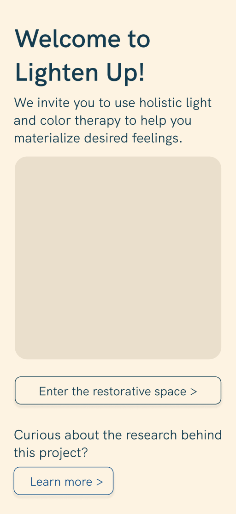
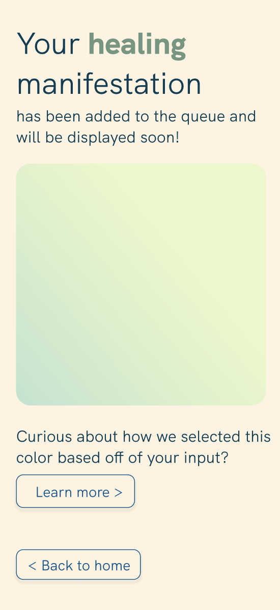

Our overall goal was to create an interactive light installation by the end of the school year with the goal of giving students an immersive space for meditation, mindfulness, and relaxation on campus. We conducted a survey with Northeastern students asking about their experiences with mindfulness and meditation on campus and identified a need for a space like this to exist and be easily accessible to students. We wanted to find a place where students can go to have some visual release of anything they struggle with, and have interactive lights and colors meet their therapeutic needs that they specified through entering on a website
Our research process was extremely exploratory. We kept broad guidelines for the idea of our project -- an interactive experience that involved animated lights -- but kept our minds open throughout the semester to how that might form.
We brainstormed different ideas through class activities, conducted user research and competitive analysis, sketched ideas and worked through personas. Each of these steps helped shaped our final product and allowed for us to iterate through different forms. We discovered that we wanted to explore color theory and looked into how color maps and human emotion. With basic understanding of human emotion and color theory, we ultimately decided to focus our project to serve the needs of stressed students.


We identified the following key features:
As we began to conceptualize our idea, there were many development considerations that we asked ourselves to ensure our installation would serve our audience.
After thinking through possible use cases and considering the typical actions and relaxation patterns of students, we decided some core functionality of our space:
Our persona, Lisa Grant, represented our targed audience, which were college students who wanted a spaced to relax and practice mindfulness. This journey map reflects Lisa's goals, motivations, and frustrations.
Our storyboard followed the journey of Lisa, a college student, who often felt anxious because of the amout of assignments she has to complete. While looking for a space to relieve some of her anxiety, she saw a poster about an interactive color installation and goes to the space to explore. When she got there, Lisa scanned the QR code that was provided and completed the survey. She inputted what she was feeling at the moment and what kind of feelings she would like to manifest. A few minutes later, a color that matched the manifested feeling lighted up the room.
Our team's main idea revolved around diffusing LEDs with cottonballs on poster boards that can be hung around a room to fill the space. We wanted to make a cloud-like display and show lighting within the LED. The images to the left are two conceptual models that we made that showcase the LEDS.
The diagram to the right shows our vision of installation set up. The LEDs were mounted on poster boards that were adhered to the wall with command strips. The LEDs were also diffused with cotton balls which gave a more cozy and soft texture. Power strips were be lined against the walls to keep the chords organized and out of view.

These were the final mockups of our installation. In the left mockup, we planned to have LEDs on the blacked out wall and on the cardboard wall. In the right mockup, we planned to have the windows and the wall blacked out. The LEDs would only be on the cardboard wall and we would also hang some LEDs from the celing.


We created a website with React for users to interact with the installation. We have 4 main screens: home page, survey screen, post-survey/confirmation screen, and a color theory research screen.

The home screen gave the user a short overview of the purpose of installation. From the home screen, users could access the survey by pressing the 'Enter the restorative space>' to interact with the LED lights. Users can also interact with the 'Learn more>' button to access the color theory research page.
To interact with the installation, users had to complete a quick survey of:
Depending on the user input, a color based off of what we researched appear in the installation. Once the user submitted their survey, they could visualize their manifested feeling.
This is the confirmation screen. It showed the user the manifested color and a preview of what kinds of colors they were able to see in the installation. There was an option for users to learn more about the color theory research in another screen.
We displayed a color palette for different types of feelings based on the research we have done. There are 5 palettes that were combined and mapped to different feelings. These colors correlated to an animation that was lit up through LED lights and fiber optics in the installation. We also included the sources to the research so that users can look into color theory.

The posters were created on Figma. We created 5 different sets of posters based on our color theory research.
We used Adobe After Effects to create animations that the users preview on the website. We created animations for healing, relax, joy, creativity, and power.
Here are the links to the animations:
In January, we planned to apply for grand to fund our materials. We also planned on collaborating with the Sacred Space so find a suitable space for the installation. In Feburary, we wanted to prepare for the installation set up, gather materials, and props needed for the space. Mindful March AKA Wellness Week happened during March, so we spent most of our time constructing the installation. We prepared our final deliverables and documentation for the semester during April.
This was our budget for the materials to build the installation. Most of our budget was spent on the LED strips because we needed enough strips to fill one wall. We also needed bags of cotton balls to cover up the LED strips.
| Item | Quantity | Price |
|---|---|---|
| Arduino Uno or Raspberry Pi | 1 or 2 | $13.99 (min) / $55 (max) |
| 10 meter LED strip | 4 | $95.98 |
| Jumper Wires | 1 | $6.98 |
| 5V-10A Power Supplier | 1 | $14.49 |
| Cotton Balls | 5 | $5.99 |
| Spray Adhesive | 2 | $5.99 |
| Roll of white craft paper | 1 | $15.97 |
The Raspberry Pi is like a small computer that can control the LEDs. We wrote a small script for each of the animations and we used our server to connect with the Raspberry Pi to play those animations when the user submits the survey form.
We used the Arduino software application to practice our LED animations. This was where we sampled our animations and worked through any small bugs before we began development with the actual equipment.

The installation was located in the Northeastern Center for Spirituality, Dialogue, and Service (Ell Hall 206F). In the space, we had the LEDs on the wall with stuffing to dim the lights.